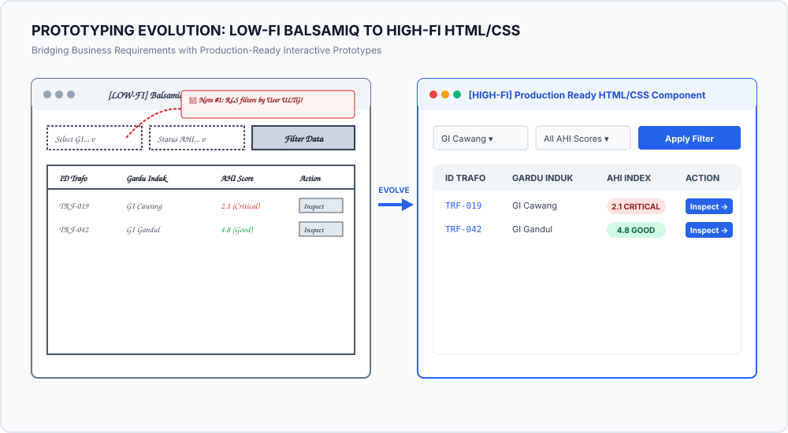
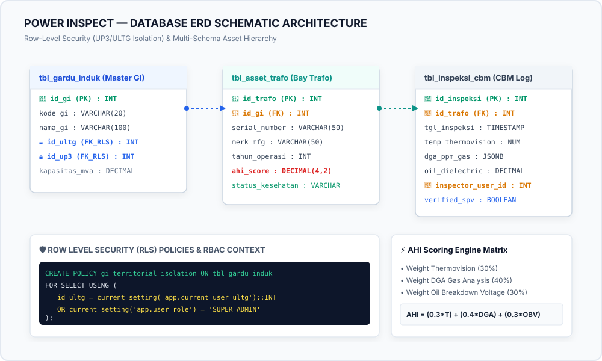
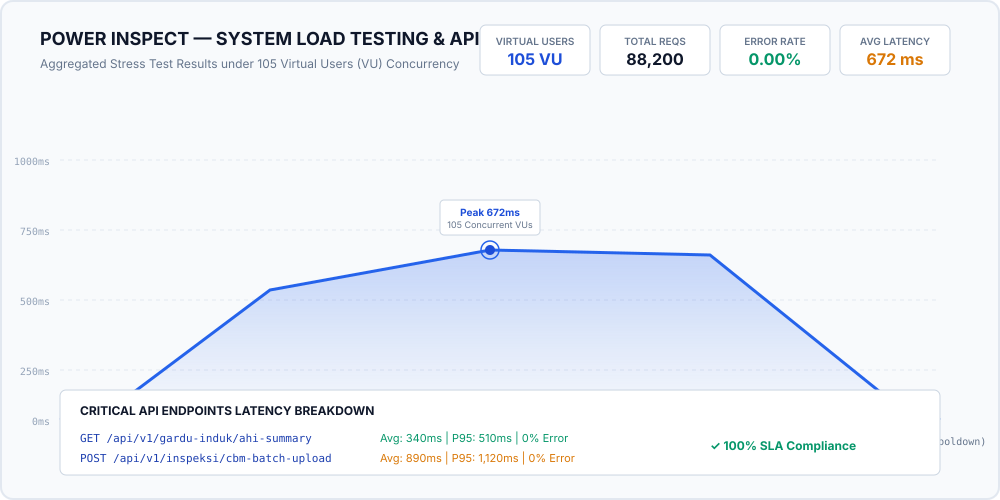
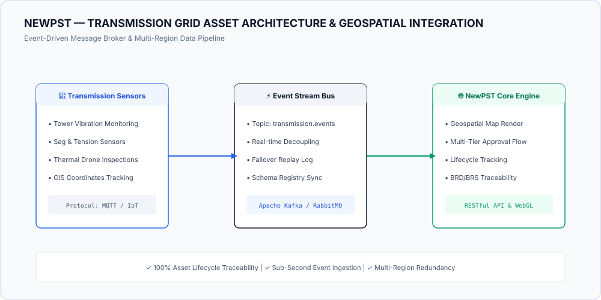
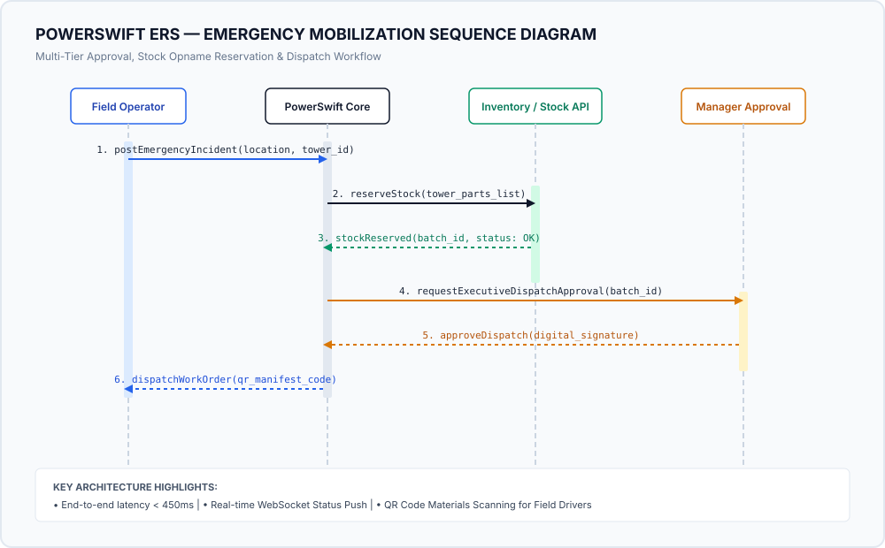

Technical Artifact View
High-resolution vector architecture diagram view.
Over 3 years of experience driving digital transformation across PLN Icon Plus (Charge.in, GBMO Stream GAS, Power Inspect). Specializing in Substation & Transmission Asset Management, BRD/BRS/SDD authoring, RLS security, and High-Fi Prototyping.
IT Business Analyst • PLN Icon Plus
📍 Karawang, Jawa Barat, Indonesia
Combining structured Scrum frameworks, BPO stakeholder communication, and technical database security engineering across utility-scale applications.
End-to-end authoring of technical documentation ensuring flawless alignment between business stakeholders (BPO) and developer/QA teams.
Designing territorial data isolation policies (UP3 / ULTG / UID) and executing rigorous API & Performance stress testing scenarios.
Demonstrating the transformation of annotated wireframe concepts into fully responsive, live interactive HTML/CSS prototypes hosted on GitHub Pages.

🔍 Click visual to view expanded high-resolution comparison diagram
Berikut adalah capture dari aplikasi Hi-Fi Prototype yang dibuat selama bekerja di PLN Icon Plus sebagai IT Business Analyst. Prototype ini mencakup modul ERS, NewPST, dan Power Inspect.
Detailed breakdown of key systems analyzed and delivered for power systems, substation maintenance, and transmission logistics.
Sistem Manajemen Pemeliharaan Prefentif Gardu Induk & Penilaian Kesehatan Aset Trafo Terpadu.

🔍 Klik diagram untuk melihat skema ERD & Kebijakan RLS secara lengkap
*Pengujian dilakukan secara bertahap (Ramp-up -> Peak Stress -> Ramp-down) untuk menguji efisiensi alokasi memori dan koneksi pool database PostgreSQL.*

🔍 Klik grafik untuk membuka tampilan resolusi tinggi
Geospatial tracking, transmission line maintenance history, and live interactive HTML prototype.

Click diagram to view full high-res architecture modal
Dynamic field logistics, rapid tower deployment, and real-time inventory control system.

Click diagram to view full high-res sequence modal
Unified matrix summarizing strategic objectives, security level, key deliverables, and business value impact across all projects.
| SYSTEM / PROJECT | PRIMARY OBJECTIVE | SECURITY & GOVERNANCE | KEY ANALYST ARTIFACTS | BUSINESS VALUE IMPACT |
|---|---|---|---|---|
| ⚡ Power Inspect | Preventive Substation Maintenance & AHI Scoring | Row-Level Security (RLS UP3/ULTG) & RBAC | ERD, AHI Matrix, Load Testing Suite (105 VU) | Consolidated 11+ legacy sources into 1 platform with 0% stress error rate. |
| 🌐 NewPST / Hi-Fi Transmisi | Transmission Asset Management & Geospatial Tracking | Multi-Tier Approval Hierarchy & Audit Logs | BRS, SDD, Use Cases, Live Interactive Prototype | Achieved 100% asset traceability & interactive prototype validation. |
| 🏗️ PowerSwift ERS | Emergency Tower Mobilization & Stock Opname | Digital Signature Verification & QR Manifest | UML Sequence Diagrams, Mobile Opname Wireframes | - |
IT Business Analyst • PLN Icon Plus
📍 Karawang, Jawa Barat, Indonesia | ✉️ ardvarez@gmail.com | 📞 +62 812-2325-0074
High-resolution vector architecture diagram view.